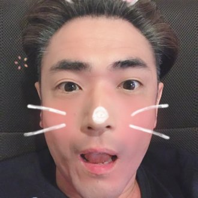
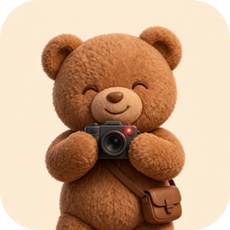
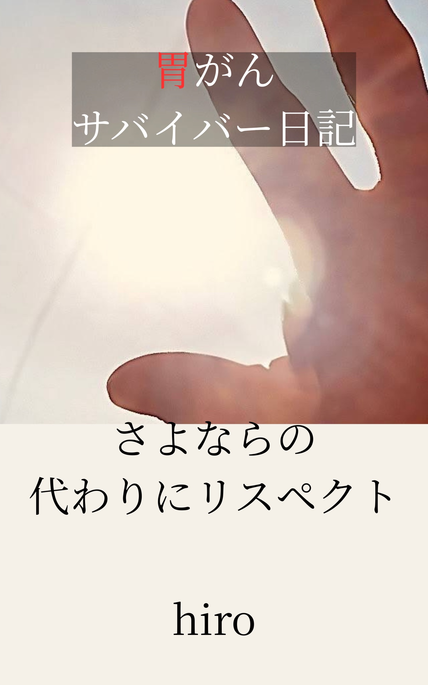
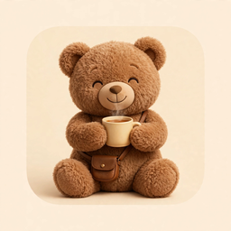

ひろぺ
hiroの作ったもの一覧 公式HPです
胃がんサバイバーがAIと作っています
随時更新中。ブックマーク推奨です
⚠ 大切なお知らせ（無断転載・改造・再配布の禁止）
このページが公式です。このページ以外で公開・配布されているアプリは、公式のものではありません。
このサイトと、ここで紹介しているアプリ・文章・画像の著作権は、制作者 hiro にあります。著作権法により、許可なく複製・改変・アップロード（公衆送信）することはできません。
次の行為を禁止します。アプリや文章・画像のコピー、改造したものの配布、有料・無料を問わない販売・再配布。
個人で使うのは自由です。自分が使いやすいように直して、自分だけで使うことも構いません。
公式のアプリは、入力したデータを外部へ送信しません（あなたの端末の中だけに保存されます）。データを送信したり、ID・パスワードの入力を求めるものは、公式ではありません。絶対に入力しないでください。
公式でないもの、改造されたものによるトラブルやお問い合わせには、対応できません。
無断転載・再配布を確認した場合は、公開停止の申し入れや削除依頼など、必要な対応を取ります。

note
胃がん宣告された日から始めた日記。

YouTube
日記を読み上げる短い動画。毎日19時に1話ずつ上がります。

本
胃がん日記をまとめた本と、AIと本を作った裏側の本。
Muse
このページのものづくりで使っているAIです。よければ試してみてください。参加後48時間以内に設定で下のコードを入れると、あなたも私もMuseトークンをもらえます。招待枠には限りがあるので、先着順になります。
コードの部分をタップするとコピーできます。
Museに参加する →
終活相談
同じ経験をした人同士で、話せる場所です。